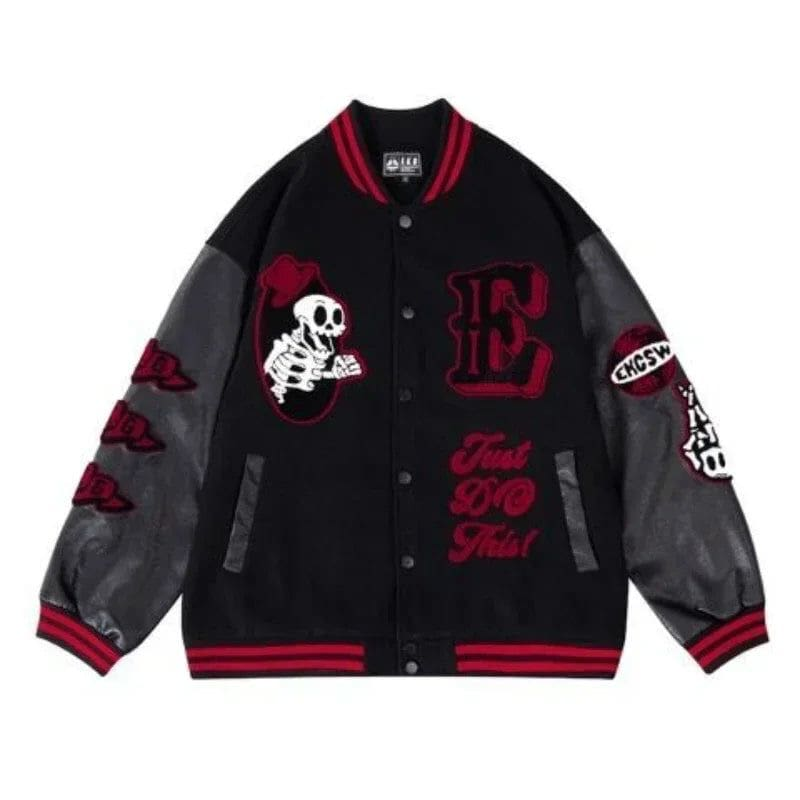
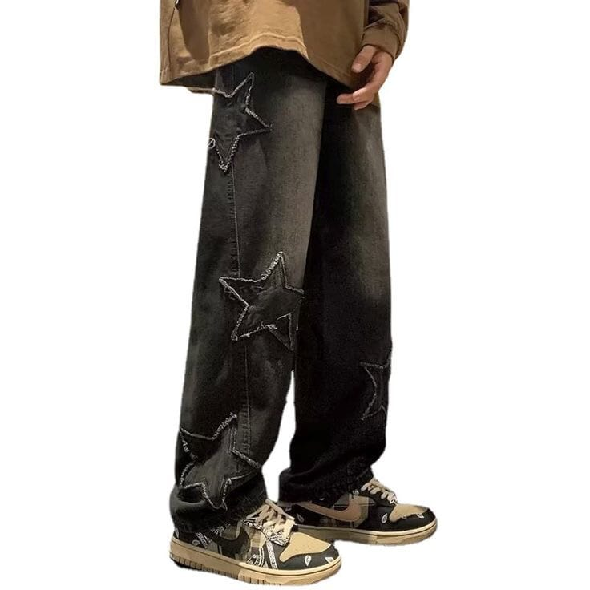

Skeleton Jacket スケルトンジャケット
A black and red vintage jacket from the Netherlands with a smooth and stretchy cotton for stylish people. おしゃれな人のための、滑らかで伸縮性のあるコットンを使用したオランダの黒と赤のヴィンテージジャケット

Frown Baggy Pants しかめ面バギーパンツ
A black baggy pants with stars on it coming from L.A with a thick leather and stylish look for fashion people. 発の星柄黒バギーパンツ 厚手レザーでスタイリッシュなファッションピープル向け